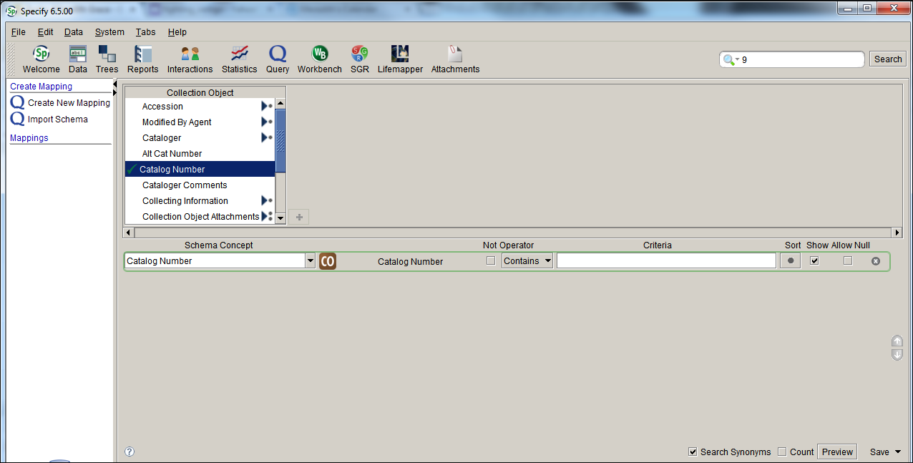

Exporting Data for a Web
Portal/Third Party
The 6.5 release of Specify facilitates the creation of a web
portal by using the Apache Solr search platform. Specify data can
also be shared with third parties, such as GBIF, FIshnet, HarpNet, Mnis or OBIS.
Both instances of data sharing require two steps to create an
index file. First, the schema of the web portal/third party must be mapped to
the Specify schema using the Schema Mapping Editor inside Specify.
Next, the data file needs to be created and/or updated using the Data
Exporter stand-alone application (found in the bin directory
within the Specify application directory).
Creating a Web Portal using exported Specify data and Solr
Specify 6.5 harnesses the search capabilities of Apache Solr to provide a full-featured web interface for public access to specimen data and images.
Creating a web portal using Specify data and Solr requires
several steps:
- Apache Solr and a server must be installed on the computer
that will be serving data to the internet.
- Create and Export a Schema Mapping file from within Specify.
- Use the Data Exporter, a separate Specify tool, to create
(build) an index of the data and other configuration files.
- Integrate the exported web portal files with Solr
Each of these steps is explained in a web portal document
accessible on the Specify Project website: specifysoftware.org.
Specify takes advantage of the Global Biodiversity
Information Facility's (GBIF) Integrated Publishing Toolkit
(IPT) to publish Specify data to the web. IPT is an open-source,
Java web application designed to publish biodiversity data on
the Internet. The IPT creates an HTML web site on your web
server and starts a network service that publishes your
collection's data with the TAPIR data communications protocol.
The third party web publisher can then be notified of the existence of your IPT server to
make first contact and integrate your data into their cache.
You will be assimilated. Specify no longer uses its own
web interface software nor the DiGIR protocol for serving XML
encoded data. See http://ipt.gbif.org
for additional information regarding IPT.
Using the Integrated Publishing Toolkit to display and
publish, Specify collection data requires several steps.
- Install Tomcat on the computer that will be
serving data to the internet.
- Map Specify data to a schema authority, such as
Darwin Core, from inside Specify.
- Use the Data Exporter, a separate Specify tool, to
create (build) the data file for IPT.
- Setup IPT to display Specify data.
Each of these steps is explained in the pdf document, Publishing
Specify Data with IPT, found on the Specify website
documentation page at http://specifysoftware.org/content/documentation.
The current document explains how to define, or 'map', the
Specify fields for data export. Please refer to the Data
Exporter page for documentation about generating the export
data file.
The Schema Mapper is a powerful tool for organizing data which need to be exported. The schema mapping tool is used to create a query, referred to as a map, for exporting data from Specify to a web publishing platform, i.e. GBIF, or a Specify Web Portal. When publishing to a third party, such as GBIF, the map also creates relationships between the fields in Specify and the predefined field types and column headings in required.
Open the Schema Mapping Tool by choosing System >
Schema Mapper.
Two actions are available in the side bar:
- Create New Mapping
- Import Schema
Any existing mapping files are also listed on the side bar.
Import Schema
Schema refers to the many tables and fields that systematize the many dimensions and relationships of the data within biological collections. When preparing data in Specify to be published by a third party it is often necessary to use a predefined schema to ensure all necessary data files are included in the data export.
Specify ships with the
following schema file preloaded in the Specify/Config
directory:
- TDWG_DW_Core.xsd - Darwin Core 1.4 -
draft standard under discussion (used in GBIF, and
recommended to use in GBIF)
Note: earlier versions of Specify included other schema files that may also be available in the Import Schema tool when upgrading to Specify 6.5.
- If a schema other than Darwin Core is desired, it must first
be downloaded (preferably into the same Config directory) and saved into the file system as an .xsd definition file.
Three examples of predefined schemas that require importing into Specify are:
OBIS - http://www.iobis.org/obis/obis.xsd
PaleoPortal - http://data.paleoportal.org/schema/conceptual/1.0/paleoportal.xsd
ABCD - http://rs.tdwg.org/abcd/2.06/ABCD_2.06.xsd
Note: Currently all schema
mappings are assumed to be specimen-based, i.e: the elements
described in the schema definition are assumed to refer to
biological specimens. This means the mapping is based on a
CollectionObject query by default.
- Next, click Import Schema and choose the file from the resulting system dialog. The schema will be added to the list of predefined schemas available when using the Create New Mapping tool.
- The imported schema requires a Title and Version. The two
entries will be joined, or concatenated, together and used to
identify the schema mapping in the external tool. The
concatenation will also be used for the name of the database
table which holds the cache.
To delete a schema from the available list (and your
Specify/Config directory) right-click in the side bar (in an
empty space), then choose Delete Schema in the
resulting context menu. You may also delete the file directly
from your Specify/Config directory.
Create New Mapping
Mapping files can be created by either choosing to edit a predefined schema or by selecting the desired fields from within Specify to create a custom mapping file.
Click Create New Mapping on the side bar. The resulting dialog lists the available predefined schemas and a no schema choice.
Create New Mapping from a Predefined Schema
Click Create New Mapping from the side bar, then choose a predefined schema from the list. A mapping editor opens with a list of Specify fields in the top section and a list of data types, referred to as Schema Concepts, in the bottom section.

Specify automatically matches a Schema Concept from the predefined schema to a field in Specify.
Remap a term by simply clicking the list box ( ) and selecting a new schema concept from the list. Only unmapped schema concepts are available from the list.
) and selecting a new schema concept from the list. Only unmapped schema concepts are available from the list.
Add a term by selecting a field from the Specify list and clicking the  button. The Schema Concept will be defined as 'Not Mapped'. Choose a schema Concept from the drop down list to map the new field.
button. The Schema Concept will be defined as 'Not Mapped'. Choose a schema Concept from the drop down list to map the new field.
Note: it is not necessary to include attachment fields in mappings, attachments are automatically included in mapping files.
Delete a term by selecting it from the list and clicking the  (remove field) button.
(remove field) button.
Query Expressions can be used to narrow the results. These function similarly to the Query Builder. For additional help creating/editing query expressions
please refer to the Query
Builder help page.
Add Conditions to Eliminate Duplicate Records
IPT and Specify require that all uploaded records be
unique. Due to the one-to-many relationships contained
in Specify databases it may be necessary to add certain
conditional fields to the schema to ensure this e.g. adding
the Determination Current field and setting it to Yes will eliminate multiple determinations. One can also
select a table to take advantage of the formatted and
aggregated value for that table e.g. selecting the
Collectors table will add all collectors on a single
line. Fields can also be added to eliminate certain
records from the resulting index.
Note: uncheck the Show checkbox to hide the schema concept in the exported data cache.
Create New Mapping by choosing Specify Fields
Click Create New Mapping from the side bar, then click 'no schema' from the list. A mapping editor opens with a list of Specify fields at the top of the work space. Fields are mapped to a schema concept, which represents the name included in the exported data cache. The schema concept can be edited by simply typing into the text box.

Add a term by selecting a field from the Specify list and clicking the button. The schema concept will match the name of the Specify field and can be edited by simply clicking in the text box and typing a new name for the term.
Note: it is not necessary to include attachment fields in mappings, attachments are automatically included in mapping files.
Delete a term by selecting it from the list and clicking the (remove field) button.
Remap a term by simply clicking in the schema concept text box and typing a new name for the term.
Query Expressions can be used to narrow the results. These function similarly to the Query Builder. For additional help creating/editing query expressions
please refer to the Query
Builder help page.
Add Conditions to Eliminate Duplicate Records
IPT and Specify require that all uploaded records be
unique. Due to the one-to-many relationships contained
in Specify databases it may be necessary to add certain
conditional fields to the schema to ensure this e.g. adding
the Determination Current field and setting it to Yes will eliminate multiple determinations. One can also
select a table to take advantage of the formatted and
aggregated value for that table e.g. selecting the
Collectors table will add all collectors on a single
line. Fields can also be added to eliminate certain
records from the resulting index.
Note: uncheck the Show checkbox to hide the schema concept in the exported data cache.
Check a Schema Mapping
- Click the Preview button in the lower right
corner to display a 120 record sample of the mapping in a
query results display. If your data contains duplicate
records, you will be alerted and will need to correct this
problem by adding conditions to the query before
continuing. Once successful, Specify will display a
dialog message asking you to use the external tool to export
the data.
- If all the mappings are correct, save the schema mapping
by clicking the Save button. Name the mapping in the reulting dialog. The mapping will be saved as an xml file.
The new mapping will be listed on the side bar.
Edit a Schema Mapping
Click a mapping on the side bar to open it in the mapping editor. The schema concept in the resulting editor will display differently dependent upon the way in which the mapping file was created. Mapping files created from a predefined schema will include a list of all availabe field types for the schema concept. Mapping files created by choosing fields within Specify will include an editable text box for the schema concept.
Note: Whenever a schema mapping
is edited, a full rebuild of its cache (in the separate
Schema Exporter tool) will be required.
Import/Export a
Mapping
Import
- Right-click in the side bar (in an empty space), then
choose Import Mappings in the resulting context
menu.
- Choose the file to import from the resulting file menu
dialog
Note: When importing mappings
that have the same name as existing queries, Specify will
simply add a number (2) to the import query name.
Export
- Right-click in the side bar (in an empty space), then
choose Export Mappings in the resulting context
menu.
- If multiple mappings are available a dialog
will appear to choose the desired mapping to export.
- Name the file and choose a storage location for the file
in the resulting file menu dialog, then click the Save
button.
Delete a Mapping
Right-click on the side bar (in an empty space) then choose
Delete Schema or drag and drop a mapping onto the Trash
Can in the side bar to delete it
Note: Mappings that are deleted
from within Specify will no longer be available for data
file updates in the Data Exporter tool.
To generate the Data file see the documentation page Data Exporter.